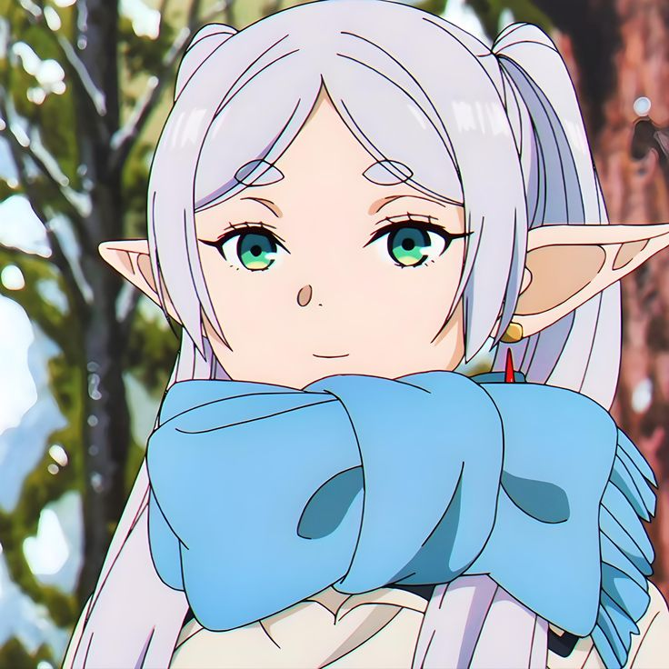
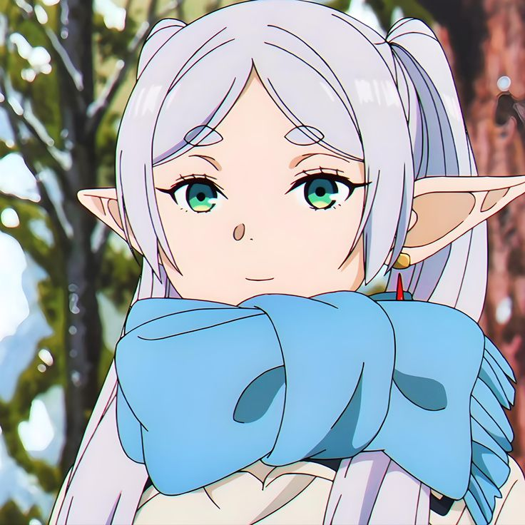
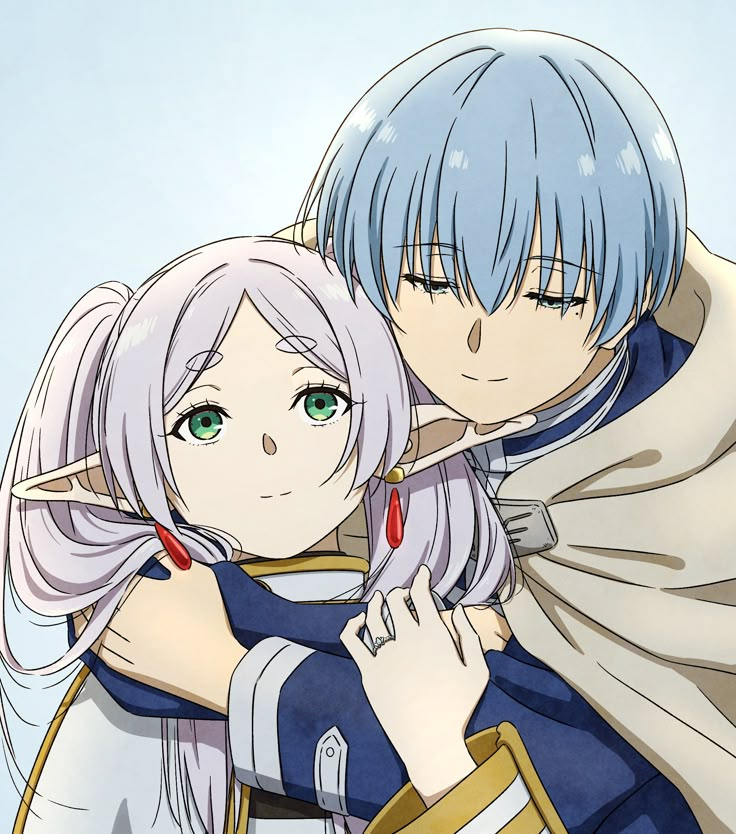
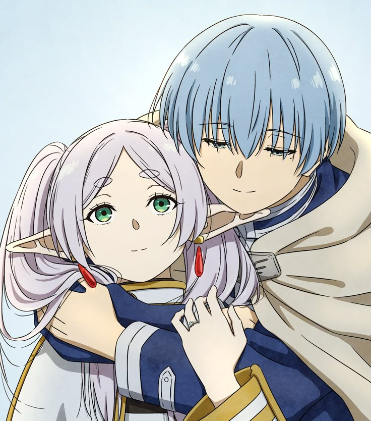

✨ Biografia ✨


 



 

üßô‚Äç‚ôÄÔ∏è Frieren √© uma maga √©lfica misteriosa e poderosa, conhecida por sua busca incansável por conhecimento mágico e sua jornada única para compreender as emo√ß√µes humanas.
üìú Sua Hist√≥ria
Como membro do grupo de heróis, Frieren serviu como a maga do grupo por 10 anos. Sua especialidade em magia e vasto conhecimento foram cruciais para a derrota do Rei Demônio.
üí≠ Personalidade
Calma e reservada, Frieren frequentemente demonstra dificuldade em compreender emoções humanas devido à sua natureza élfica e perspectiva diferente sobre o tempo. Sua busca por entendimento a torna uma personagem única e complexa.
✨ Habilidades Mágicas
- üîÆ Magia de Combate - Especialista em magias ofensivas e defensivas
- üìö Análise Mágica - Capacidade de compreender e copiar magias
- ⏳ Longevidade - Como elfa, possui vida extremamente longa
üíï Relacionamentos
Fern
Sua atual aprendiz e companheira de viagem
Stark
Jovem guerreiro que acompanha sua jornada
Himmel
O herói que liderou o grupo contra o Rei Demônio
— Frieren"O tempo passa diferente para elfos e humanos..."
Timeline da História
Magias e Habilidades
Meteoro
Conjura uma poderosa chuva de meteoros que causa dano massivo em uma grande área. Uma das magias ofensivas mais potentes de Frieren.
Lança Élfica
Cria lâminas mágicas de energia élfica que atravessam armaduras e barreiras mágicas comuns.
Congelamento Arcano
Reduz drasticamente a temperatura em uma área, congelando inimigos e o ambiente ao redor.
Barreira Arcana
Cria uma barreira mágica impenetrável que protege contra ataques físicos e mágicos.
Magia de Cura
Restaura energia vital e cura ferimentos. Frieren não é especialista em magias de cura, mas possui conhecimento básico.
Contramagia
Anula ou reflete magias inimigas. Uma habilidade que Frieren desenvolveu após séculos de estudos mágicos.
Análise Mágica
Permite a Frieren analisar e compreender estruturas mágicas complexas, possibilitando a cópia de magias.
Teleporte
Transporta instantaneamente a si mesma ou objetos para locais conhecidos.
Ilusão
Cria ilusões convincentes que enganam os sentidos. Frieren utiliza esta magia para distrações estratégicas.
✨ Características ✨
Maga Experiente
Mais de 1000 anos de experiência em magia
Estudiosa
Sempre em busca de novos conhecimentos mágicos
Imortal
Uma elfa com vida extremamente longa